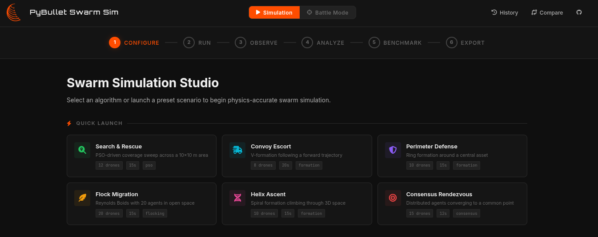
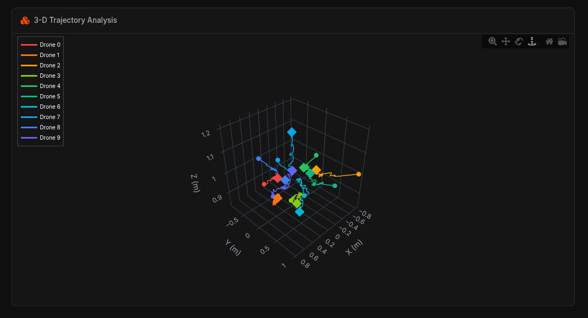
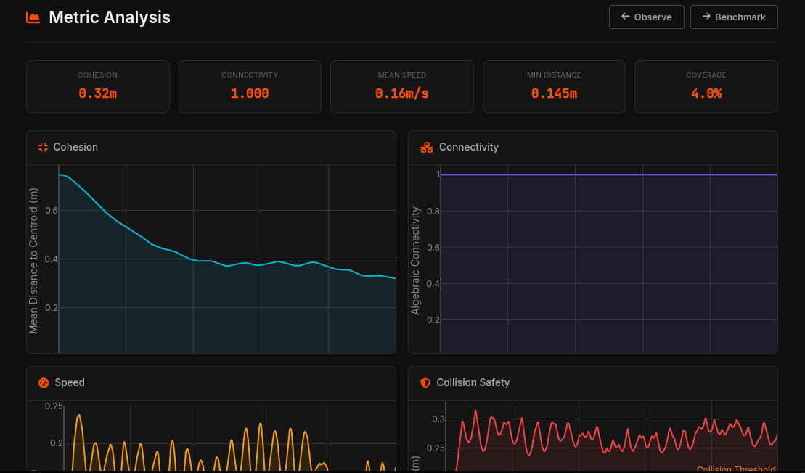
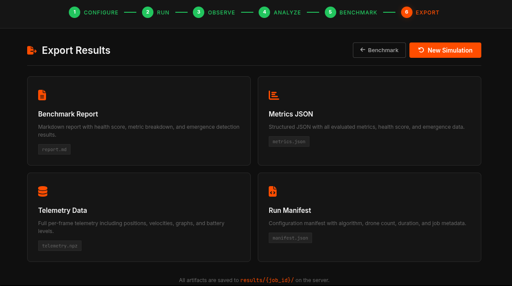

Web Dashboard & Telemetry
PyBullet Swarm Sim ships with a powerful FastAPI + Plotly interactive dashboard that handles the complete simulation workflow: Configure → Run → Observe → Analyze → Benchmark → Export. It allows researchers to bypass the command line and conduct complex, multi-agent experiments entirely in the browser.

The Analytics Workflow
The dashboard is designed to guide you through the complete lifecycle of a swarm intelligence experiment.
1. Live 3D & 2D Observation

As the simulation runs, the backend streams telemetry back to the browser via Server-Sent Events (SSE). You can watch the swarm execute its behavior in real-time through interactive 3D and 2D scatter plots, tracking the absolute position and flight paths of every single drone.
2. Metric Analysis

Once a run finishes, dive into the historical telemetry. The dashboard automatically calculates and visualizes convergence graphs, kinetic energy distributions, and plots distance-to-target metrics over time, allowing you to debug and deeply analyze your control logic.
3. Benchmark Report

The Benchmark feature is essential for systematic evaluation. You can generate comprehensive reports to evaluate algorithm performance side-by-side using interactive radar charts across core emergence metrics: Coverage, Cohesion, Connectivity, and Safety.
4. Export Results

Finally, researchers can easily download and export telemetry data, complete simulation states, and calculated metrics directly to .npz or .json formats. This allows for seamless integration into offline academic tools and publication pipelines.